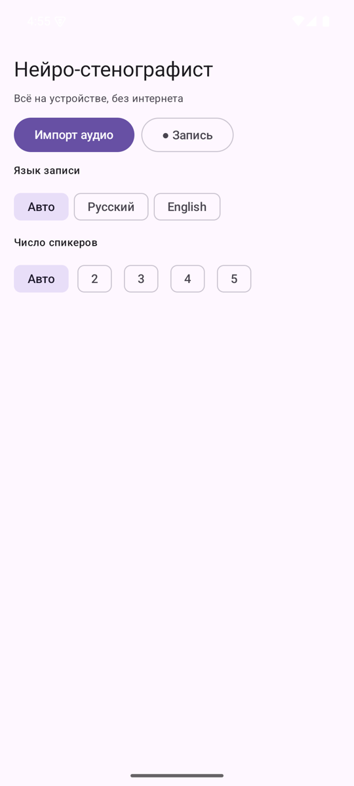
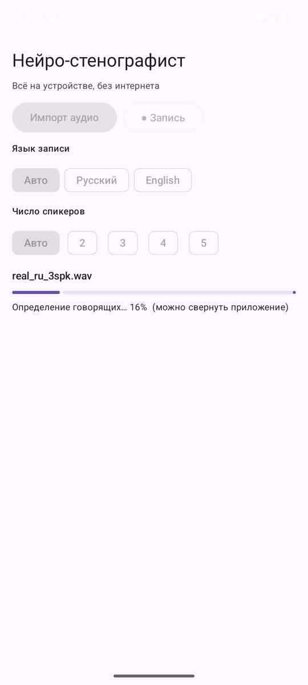
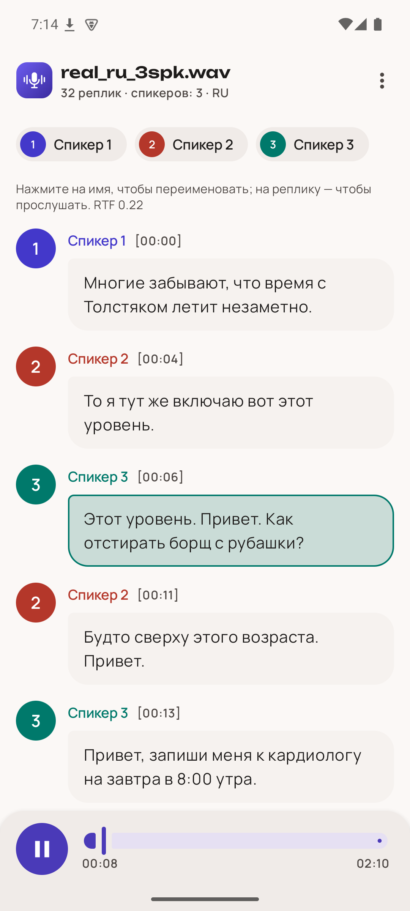
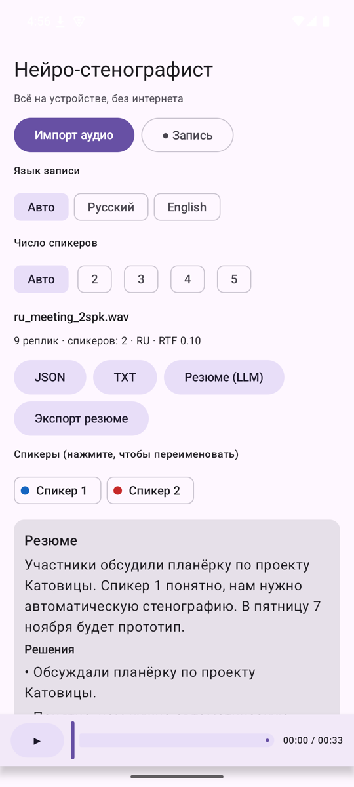

Запись разговора превращается в расшифровку прямо на телефоне: кто, когда и что сказал. Без интернета и облачных сервисов: все модели внутри приложения.
Протоколы совещаний, интервью и звонков пишут вручную или отдают в облачные сервисы. Первое долго, второе часто нельзя: запись может содержать служебную информацию, а на объекте может не быть сети. Нужна расшифровка с разделением по говорящим и таймкодами, которая полностью работает на обычном телефоне.
Русский (GigaAM v3) с пунктуацией и заглавными буквами, английский (Whisper). Язык определяется автоматически.
Автоматическая диаризация на 2–6 участников или заданное число спикеров. Имена можно переименовать.
Начало и конец каждой реплики; тап по реплике проигрывает запись с этого места.
Импорт WAV, MP3, M4A, OGG, FLAC, видео — или запись с микрофона в приложении.
JSON строго по формату задачи, TXT для чтения, резюме — отдельным файлом.
Qwen2.5-0.5B на llama.cpp по кнопке пишет краткое содержание, решения и задачи.
Эмулятор Android arm64, 4 ГБ RAM; 6 русских записей (синтетические диалоги и живые голоса SOVA RuDevices), режимы «Авто». Методика и все файлы — в TEST_RESULTS.md.




{
"transcript": [
{ "speaker_id": "speaker_1", "start_ms": 400, "end_ms": 3200, "text": "Многие забывают, что время с Толстяком летит незаметно." },
{ "speaker_id": "speaker_2", "start_ms": 4300, "end_ms": 6500, "text": "То я тут же включаю вот этот уровень." },
{ "speaker_id": "speaker_3", "start_ms": 6100, "end_ms": 10500, "text": "Этот уровень. Привет. Как отстирать борщ с рубашки?" }
]
}
Скачайте APK и разрешите установку из этого источника.
«Импорт аудио» → файл. Или «Запись» с микрофона.
Обработка идёт в фоне; приложение можно свернуть.
«JSON» или «TXT» → выберите папку, например Downloads.